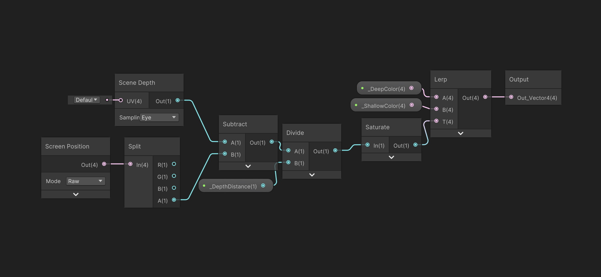

Water Shader
The properties for a water shader in this topic are depth fade, foam control, and refraction
Properties
Depth fade
Depth fade is a technique used in water, fog, and transparent shaders to make the edges where a transparent object (like water) meets another surface (like terrain) blend smoothly instead of sharply
It works by comparing
- The distance from the camera to the object behind the water (scene depth).
- The distance from the camera to the water surface itself.

What this graph does is it smoothly lerps between two colors _ShallowColor and _DeepColorbased on the _DepthDistance between the water surface and the geometry underneath, using scene depth.
Foam control
You're already blending between shallow and deep water colors using depth fade. Now let’s add foam near shallow areas (shoreline) for extra realism.
We’ll create foam that appears only where the water is shallow.
We control the foam by:
- _FoamColor
- _FoamThreshold
- _FoamIntensity
Refraction
Refraction creates the illusion of light bending through water. Think of how rocks look "shifted" or "distorted" under a lake’s surface. In Unity, we simulate refraction by distorting the background scene using a screen texture sampling, typically influenced by noise or normals.
What This Shader Graph Does
- Animating a normal map.
- Using the normals to distort the screen UVs.
- Sampling the scene color with the distorted UVs.
- Outputting the final refracted color.
And last we combine all the shader